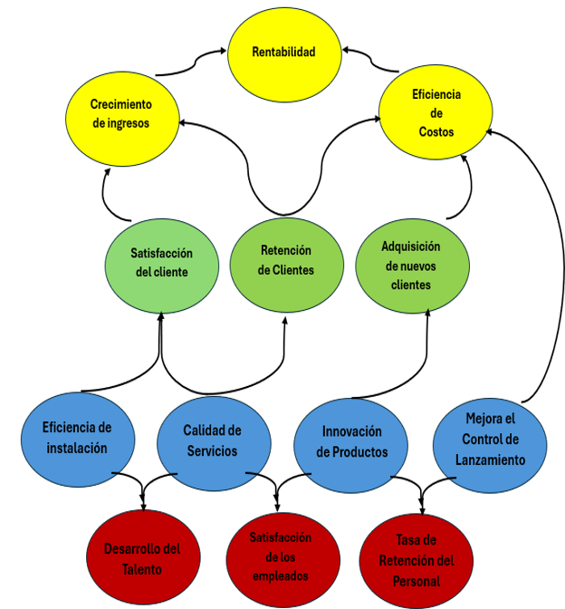

| Visión | Llegar a que el 30% de los hogares adopten la domótica para convertirse en hogares inteligentes y sostenibles | ||
|---|---|---|---|
| Misión | Mostrar la domótica como una solución que está transformando los hogares en espacios inteligentes que ofrecen comodidad, seguridad y eficiencia. | ||
| Prioridades Estratégicas | |||
| Crecimiento Sostenible | Innovación Tecnológica | Expansión del Mercado | |
| Resultados Estratégicos | |||
| Implementar un sistema de gestión de costos para identificar áreas de mejora y reducir gastos innecesarios. | Establecer un departamento de I+D dedicado a la exploración y desarrollo de nuevas tecnologías. | Realizar estudios de mercado para identificar las ciudades principales con mayor potencial de adopción de domótica. | |
| OBJETIVOS ESTRATÉGICOS | Medidas | Objetivos | Proyectos / Notas |
|  | •Tasa de crecimiento de ingresos trimestral. •Margen de beneficio neto •Costos operativos como porcentaje de ingresos |
•10% cada trimestre •20% neto •40% de los ingresos |
•Comparación de ingresos trimestrales actuales con los del trimestre anterior •Análisis de estados financieros trimestrales •Revisión mensual de costos operativos e ingresos |
| •Índice de satisfacción del cliente (CSAT) •Tasa de retención de clientes •Número de nuevos clientes por trimestre |
•Mantener un CSAT de al menos 85% •Aumentar la retención de clientes en un 15% anual •Captar 50 nuevos clientes cada trimestre |
•Encuestas de satisfacción post-servicio •Análisis de la base de clientes y tasas de renovación de servicios •Registro de nuevos contratos de servicios |
|
| •Tiempo promedio de instalación de sistemas de domótica •Tasa de fallos o reapariciones de problemas en sistemas instalados •Número de nuevos productos o mejoras introducidos anualmente |
•Reducir el tiempo de instalación a 5 días hábiles •Mantener la tasa de fallos por debajo del 2% •Introducir al menos 5 nuevas mejoras o productos cada año |
•Seguimiento del tiempo de instalación por proyecto •Registro de incidencias y reapariciones de problemas •Revisión anual de lanzamientos y mejoras |
|
| •Número de horas de capacitación por empleado al año •Índice de satisfacción del empleado (ESAT) •Tasa de retención anual del personal clave |
•Asegurar 40 horas de capacitación por empleado al año •Mantener un ESAT de al menos 80% •Mantener una tasa de retención del 90% para el personal clave |
•Registro de programas de capacitación y asistencia •Encuestas de satisfacción interna •Análisis de bajas y retención de personal |
|
| Indicador | Descripción | Fórmula | Objetivo | Proyectos / Notas |
|---|---|---|---|---|
| Tasa de Crecimiento de Ingresos Trimestral | Mide el aumento porcentual de los ingresos trimestrales. | (Ingresos Trimestrales Actuales - Ingresos Trimestrales Anteriores) / Ingresos Trimestrales Anteriores x 100 | 10% cada trimestre | Comparación de ingresos trimestrales actuales con los del trimestre anterior, análisis de estados financieros trimestrales |
| Margen de Beneficio Neto | Mide la rentabilidad neta después de todos los gastos. | (Beneficio Neto / Ingresos Totales) x 100 | 20% neto | Revisión mensual de costos operativos e ingresos, optimización de recursos |
| Costos Operativos como Porcentaje de Ingresos | Mide la eficiencia de los costos operativos en relación con los ingresos. | (Costos Operativos / Ingresos Totales) x 100 | 40% de los ingresos | Análisis detallado de costos, implementación de medidas de reducción de gastos |
| Indicador | Descripción | Fórmula | Objetivo | Proyectos / Notas |
|---|---|---|---|---|
| Índice de Satisfacción del Cliente (CSAT) | Mide el nivel de satisfacción de los clientes con los productos y servicios de la empresa. | (Número de Clientes Satisfechos / Número Total de Clientes Encuestados) x 100 | Mantener un CSAT de al menos 85% | Encuestas de satisfacción post-servicio, análisis de feedback de clientes |
| Tasa de Retención de Clientes | Mide el porcentaje de clientes que permanecen con la empresa durante un periodo específico. | (Número de Clientes al Final del Periodo - Nuevos Clientes Durante el Periodo) / Número de Clientes al Inicio del Periodo x 100 | Aumentar la retención de clientes en un 15% anual | Análisis de la base de clientes, tasas de renovación de servicios, programas de fidelización |
| Número de Nuevos Clientes por Trimestre | Mide la cantidad de nuevos clientes adquiridos cada trimestre. | Número de Nuevos Clientes / Trimestre | Captar 50 nuevos clientes cada trimestre | Registro de nuevos contratos de servicios, campañas de marketing dirigidas |
| Indicador | Descripción | Fórmula | Objetivo | Proyectos / Notas |
|---|---|---|---|---|
| Tiempo Promedio de Instalación de Sistemas de Domótica | Mide el tiempo promedio que se tarda en instalar sistemas de domótica. | Tiempo Total de Instalación / Número de Instalaciones | Reducir el tiempo de instalación a 5 días hábiles | Seguimiento del tiempo de instalación por proyecto, optimización de procesos de instalación |
| Tasa de Fallos o Reapariciones de Problemas en Sistemas Instalados | Mide el porcentaje de sistemas instalados que presentan fallos o requieren reparaciones. | (Número de Fallos / Número Total de Sistemas Instalados) x 100 | Mantener la tasa de fallos por debajo del 2% | Registro de incidencias, análisis de causas y medidas preventivas |
| Número de Nuevos Productos o Mejoras Introducidos Anualmente | Mide la cantidad de nuevos productos o mejoras introducidos cada año. | Número de Nuevos Productos / Año | Introducir al menos 5 nuevas mejoras o productos cada año | Revisión anual de lanzamientos y mejoras, investigación y desarrollo de nuevos productos |
| Indicador | Descripción | Fórmula | Objetivo | Proyectos / Notas |
|---|---|---|---|---|
| Índice de Capacitación de Empleados | Mide la cantidad de horas de capacitación recibidas por los empleados. | Horas de Capacitación Totales / Número de Empleados | Aumentar el índice en un 20% anual | Implementar programas de formación continua, evaluar las necesidades de capacitación |
| Satisfacción del Empleado | Mide el nivel de satisfacción de los empleados con su trabajo y el ambiente laboral. | (Número de Empleados Satisfechos / Número Total de Empleados Encuestados) x 100 | Alcanzar una satisfacción del 85% | Mejorar las condiciones laborales, ofrecer incentivos y beneficios |
| Tasa de Retención de Empleados | Mide el porcentaje de empleados que permanecen en la empresa durante un periodo específico. | (Número de Empleados al Final del Periodo - Nuevos Empleados Durante el Periodo) / Número de Empleados al Inicio del Periodo x 100 | Mantener una tasa de retención del 90% | Mejorar las oportunidades de desarrollo profesional, fomentar un ambiente de trabajo positivo |